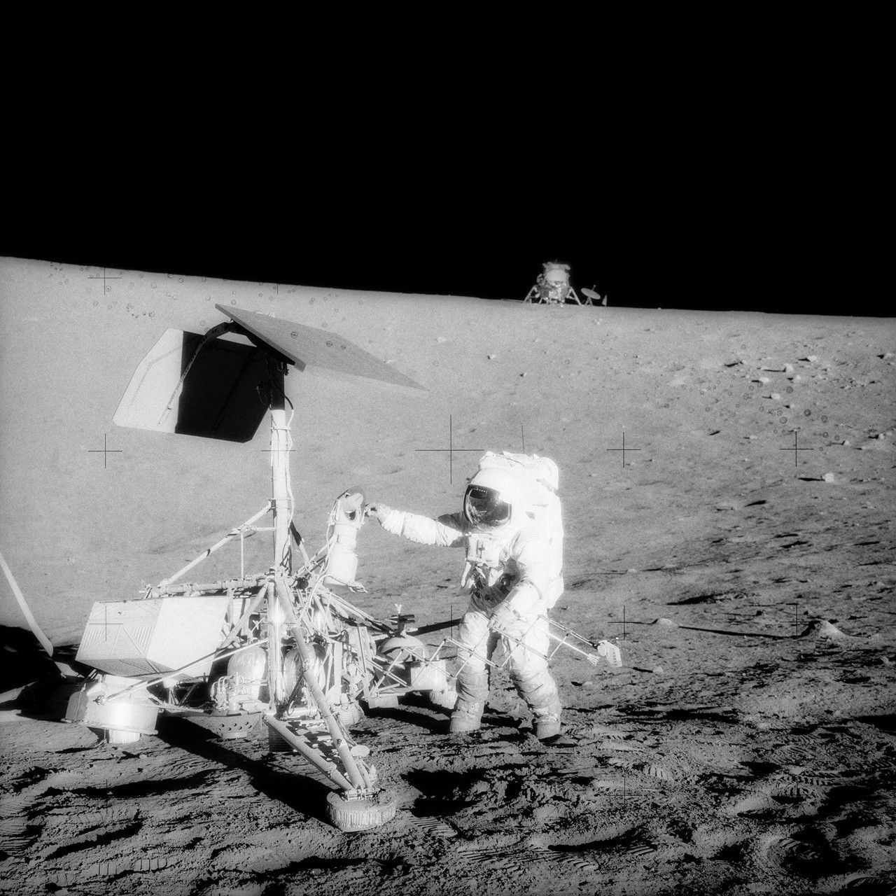

Uncrewed
Surveyor 3
Suveyor 3 is the third of its series, but carried a surface-sampling instrument for the first time. It seems the reflective rocks disturbed the the lander's ability to land, so it bounced on the Moon twice, then settled down on the third time to a soft-landing. Lets take TV pictures of the moon now! For some reason the last contact with the vehicle was 4 May 1967, two days after its landing.
Learn more on NASA